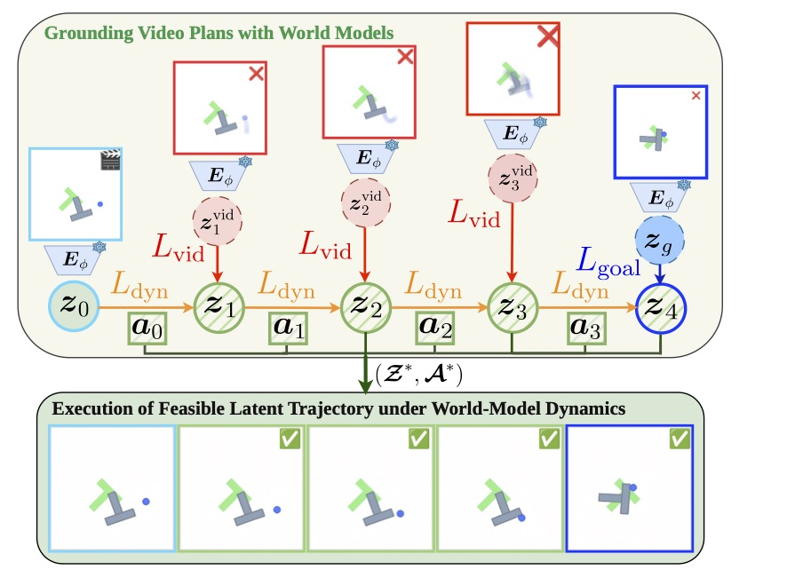
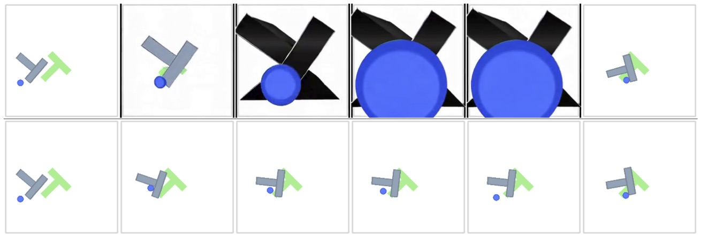
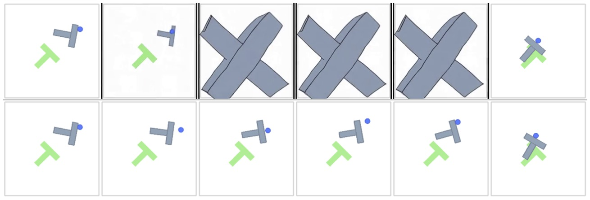
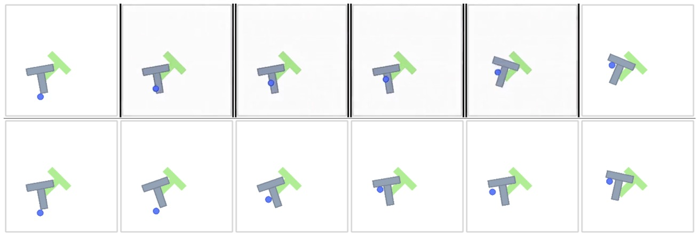
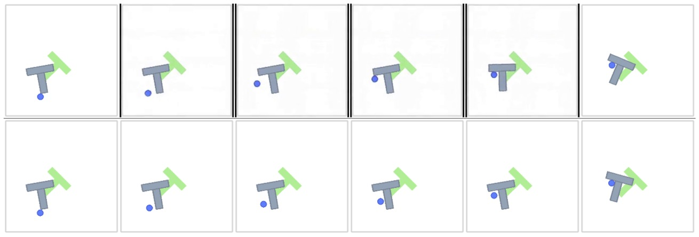
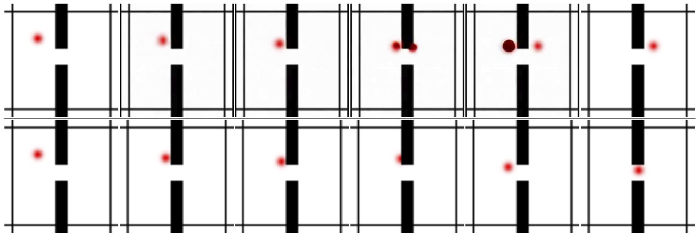
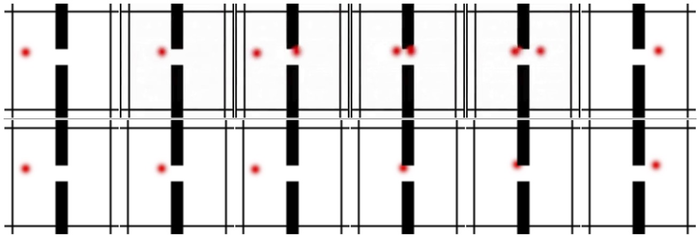

GVP-WM grounds video-generated plans into feasible action sequences
using a pre-trained action-conditioned world model via video-guided latent collocation.
Abstract
Large-scale video generative models have shown
emerging capabilities as zero-shot visual planners,
yet video-generated plans often violate temporal
consistency and physical constraints, leading to
failures when mapped to executable actions. To
this end, we propose Grounding Video Plans with
World Models (GVP-WM), a planning method
that grounds video-generated plans into feasible action sequences using a pre-trained action-conditioned
world model. At test-time, GVP-WM first generates a video plan from initial and
goal observations, then projects the video guidance onto the manifold of dynamically feasible
latent trajectories via video-guided latent collocation. In particular, we formulate grounding as a
goal-conditioned latent-space trajectory optimization problem that jointly optimizes latent states
and actions under world-model dynamics, while
preserving semantic alignment with the video-generated plan. Empirically, GVP-WM recovers
feasible long-horizon plans from zero-shot image-to-video–generated and motion-blurred videos
that violate physical constraints, across navigation and manipulation simulation tasks.
I2V-Generated Video Plans Often Violate Physics
Spatial Bilocation
Object Teleportation
Rigid-Body Violation
Object Disintegration
Morphologic Drift
GVP-WM: Grounding Video Plans with World Models
Our method first generates a video plan from the initial and
goal observations and then grounds it into a feasible action
sequence using trajectory optimization in latent space.

Overview of GVP-WM. A video plan, which may contain physically infeasible transitions (e.g., motion blur or object teleportation), is encoded into a sequence of latent states \(\{z^{\mathrm{vid}}_{t:T-1}\}\) using a pretrained visual encoder \(E_\phi\) of the world model. Video-guided latent collocation optimizes a latent trajectory \(\{z_{t+1:T}\}\) and corresponding actions \(\{a_{t:T-1}\}\) by minimizing an augmented Lagrangian objective, which balances video alignment (\(\mathcal{L}_{\mathrm{vid}}\)), terminal goal reaching (\(\mathcal{L}_{\mathrm{goal}}\)), and world-model dynamics (\(\mathcal{L}_{\mathrm{dyn}}\)). The actions from the optimal latent trajectory satisfying the world-model dynamics constraints are executed using model predictive control.
Video Plan Guidance
A video plan \(\tau_{\mathrm{vid}}\) is a sequence of visual observations generated by a conditional video generative model \(\mathcal{G}\) that provides temporally ordered visual foresight for completing a task. \(\mathcal{G}\) can be instantiated using an image-to-video (I2V) diffusion-based video model that produces temporally coherent visual transitions between the start and goal observations.
We map the generated video plan into the latent state space of the action-conditioned world model using its underlying visual encoder, yielding a sequence of latent states \(z^{\mathrm{vid}}_{0:T}\).
In addition, we employ a semantic alignment loss between the optimized latent trajectory and the video plan. Specifically, the video alignment loss is defined as
where both optimized and video latent states are projected onto the unit \(\ell_2\) hypersphere by \(\phi(z) = z / \|z\|_2\). This loss penalizes angular deviation between latent embeddings while remaining invariant to their magnitude.
Video-Guided Latent Collocation
We formulate grounding video plans into feasible action
sequences as a video-guided direct collocation problem. In
direct collocation, both the latent states \(\mathcal{Z} = z_0, \ldots, z_T\) and
the actions \(\mathcal{A} = a_0, \ldots, a_{T-1}\) are treated as decision variables. Our goal is to solve for a
trajectory \((\mathcal{Z}^*, \mathcal{A}^*)\) that minimizes the divergence between
the latent states of the optimized trajectory and the video
plan \(z^{\mathrm{vid}}\), while satisfying the world model dynamics \(f_\psi\), leading to the following constrained optimization problem:
where \(\tilde{C}\) denotes the latent cost objective. \(\Lambda = \{\lambda_0, \ldots, \lambda_{T-1}\}\) are the Lagrange multipliers, and \(\rho > 0\) is a scalar penalty parameter. The term \(\mathcal{L}_{\mathrm{dyn}}^{t}\) corresponds to the dynamics constraint violation at timestep \(t\), defined as:
Optimization proceeds using a standard primal–dual approach, alternating between gradient-based updates of the primal variables \((\mathcal{Z}, \mathcal{A})\) and the dual variables \(\Lambda\). In particular, we perform \(I_{\mathrm{ALM}}\) inner (primal) iterations per outer ALM step, updating the Lagrange multipliers and increasing the penalty parameter after each outer iteration.
GVP-WM Algorithm
Require: initial state \(s_0 = (o_0, p_0)\); goal observation \(o_g\); video model \(\mathcal{G}\); world model \((E_\phi, f_\psi)\); MPC parameters \((T, K)\); ALM iteration and penalty parameters
1:
Generate a video plan: \(\tau_{\mathrm{vid}} \sim \mathcal{G}(\cdot \mid o_0, o_g, c)\)
2:
Encode video plan into latent space: \(z^{\mathrm{vid}}_{0:T} \leftarrow E_\phi(\tau_{\mathrm{vid}})\)
Execute \(a_{t:t+K}\) from \(\mathcal{A}\) with sampling refinement
19:
Update current state: \(s_{t+K} \leftarrow (o_{t+K}, p_{t+K})\)
20:
end for
Grounding I2V-Generated Video Plans
Table 1. Success Rate comparison of methods on PushT and Wall for planning horizons T. WAN-0S: zero-shot; WAN-FT: domain-adapted; ORACLE: expert (upper bound).
Method
PushT
Wall
T=25
T=50
T=80
T=25
T=50
MPC-CEM
0.74
0.28
0.06
0.92
0.74
MPC-GD
0.32
0.04
0.00
0.04
0.04
UniPi (WAN-0S)
0.00
0.00
0.00
0.30
0.14
UniPi (WAN-FT)
0.10
0.00
0.00
0.40
0.18
UniPi (ORACLE)
0.52
0.18
0.08
1.00
1.00
GVP-WM (WAN-0S)
0.56
0.12
0.04
0.86
0.76
GVP-WM (WAN-FT)
0.80
0.30
0.06
0.94
0.90
GVP-WM (ORACLE)
0.98
0.72
0.36
1.00
1.00
Robustness to Motion Blur
Table 3. Success Rate under increasing levels of motion blur. MB-k denotes temporal averaging over k consecutive frames.
Source
Method
PushT
Wall
T=25
T=50
T=80
T=25
T=50
MB-10
UniPi
0.03
0.00
0.00
0.00
0.02
GVP-WM
0.82
0.46
0.08
0.94
1.00
MB-5
UniPi
0.04
0.00
0.06
0.40
0.52
GVP-WM
0.94
0.54
0.16
1.00
1.00
MB-3
UniPi
0.16
0.00
0.00
0.52
0.82
GVP-WM
0.96
0.70
0.34
1.00
1.00
ORACLE
UniPi
0.52
0.18
0.08
1.00
1.00
GVP-WM
0.98
0.72
0.36
1.00
1.00
Qualitative Analysis of I2V-Generated Video Plans

(a) Morphological Drift (Success)

(b) Morphological Drift (Failure)

(c) Rigid-Object Physics Violation (Failure)

(d) Domain-Adapted Video Guidance (Success)

(e) Spatial Bilocation (Failure)

(f) Spatial Bilocation (Success)
Qualitative comparison of video-generated plans (top) and GVP-WM executions (bottom). In Push-T, zero-shot video plans (WAN-0S) exhibit physical inconsistencies, including morphological drift (a–b) and rigid-object physics violations (c), while domain-adapted video guidance (WAN-FT) produces physically consistent plans (d). In Wall, zero-shot video plans exhibit spatial bilocation (e–f).
BibTeX
@article{ziakas2026grounding,
title={Grounding Generated Videos in Feasible Plans via World Models},
author={Ziakas, Christos and Bar, Amir and Russo, Alessandra},
journal={arXiv},
year={2026},
eprint={2602.01960},
archivePrefix={arXiv},
primaryClass={cs.CV}
}